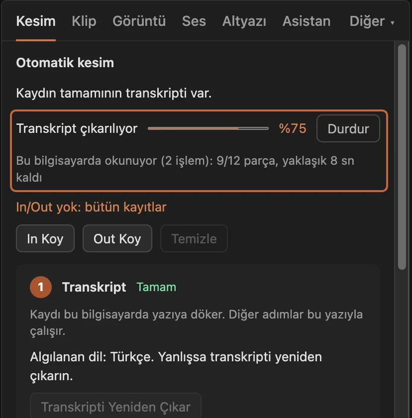
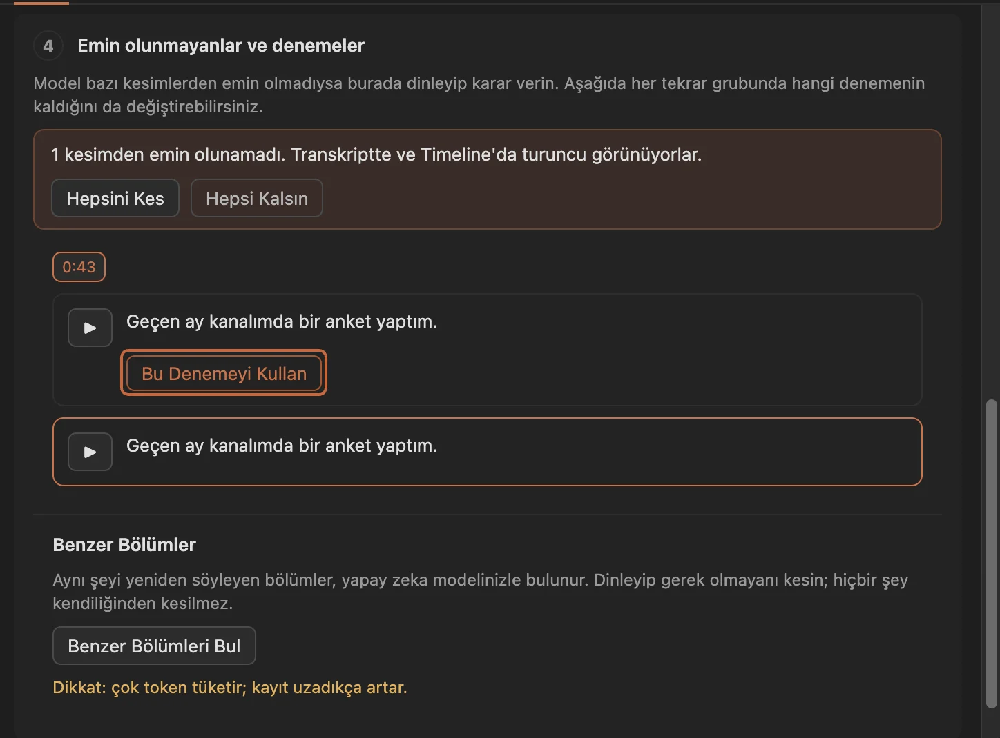
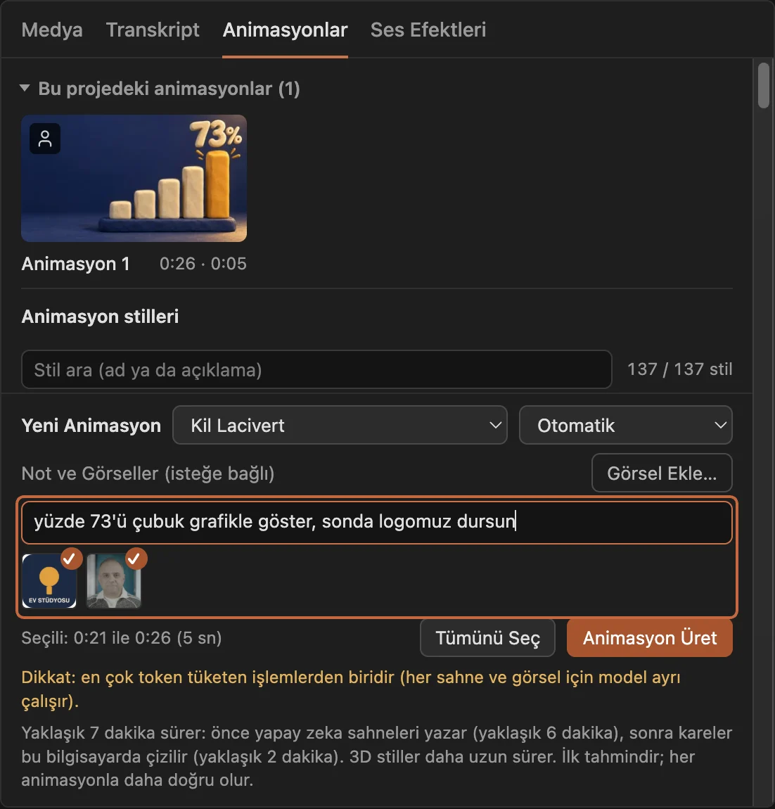

İlk videon
Bu sayfa kameraya konuştuğun bir kaydı YouTube'a hazır videoya kadar götürür. Her adım basacağın düğmeyi söyler; daha fazlası için panellerin kendi sayfaları var.
Başlamadan önce
- Kilnframe Desktop'ı kur ve açBkz. Kurulum.
- Bir yapay zeka modeli bağlaHoş geldin penceresinde Modeli bağla'ya bas. Claude ya da ChatGPT aboneliğin varsa giriş yapman yeter (nasıl); yoksa bir API anahtarı girersin. Sonra ayarlardan ben eklerim de diyebilirsin: transkript ve boşluk kesimi modelsiz çalışır.
- Program sorusunu yanıtlaHangi kurgu programına alışkınsınız? kısayolları ve panelleri ayarlar. İstersen Tura Başla ile editörde kısa bir gezinti yap.
Kaydını getir
- Dosyayı bırakVideonu Başlangıç Penceresi'ndeki Videonuzu ya da sesinizi buraya bırakın alanına sürükle ya da Dosya Ekle'ye bas. Kayıt Timeline'da, yeni bir proje açılır.

Kesimi ona bırak
Bu bölümdeki her şey sağdaki Kesim sekmesinde olur.
- Transkripti çıkar1 Transkript altında Transkript Çıkar'a bas. Konuşma bu bilgisayarda yazıya dökülür; ilerleme satırı ne kadar kaldığını gösterir.
- Boşlukları ve ııı'ları kes2 Boşluklar ve dolgu kelimeleri altında kaydırıcıyı Yumuşak ile Sıkı arasında ayarla, sonra Boşlukları Kes ve Dolgu Kelimelerini Kes'e bas. İzleyicinin altındaki süre hemen kısalır: örnek kaydımızda 1:31, 0:57 oldu.
- Tekrarları temizle3 Tekrarlar ve gereksizler altında Tekrarları ve Gereksizleri Temizle'ye bas. Yapay zeka modelin iki kez söylediğin cümleleri, yarım kalan başlangıçları ve izleyiciye olmayan konuşmaları bulur.
- Emin olmadıklarına sen karar ver4 Emin olunmayanlar ve denemeler altında dinle ve Kes ya da Kalsın de. Bir tekrar grubunda Bu Denemeyi Kullan kalacak olanı seçer.



Bir kelimeyi elle mi kesmek istiyorsun? Soldaki Transkript'te seç ve Delete'e bas. Üstü çizili bir kelimeye tıklarsan geri gelir. Bkz. Transkript.
Animasyon ekle
- Bir aralık seçAnimasyonun başlayacağı yere gel ve I'ya bas, biteceği yere gel ve O'ya bas. Transkriptte kelimeleri seçip In ve Out'u Seçime Koy da diyebilirsin.
- ÜretAnimasyonlar sekmesini aç, bir stil seç ve Animasyon Üret'e bas. Not ve Görseller (isteğe bağlı) altına yazdığın not, logo ya da fotoğraf animasyonu yönlendirir.
- Sahneleri onaylaÖnce her sahnenin bir karesini görürsün. Birini Sahneyi Yeniden Yaz ile değiştir; beğenince Onayla ve Oluştur'a bas. Animasyon kaydının üstündeki kendi izine yerleşir.


Altyazı ve ses
- AltyazıAltyazı sekmesini aç, bir Görünüm seç ve Altyazı Yap'a bas.
- Ses seviyesiSes sekmesinde, Efektler altında Ses seviyesi'ni YouTube (-14 LUFS) yap.

Dışa aktar
- Dışa Aktar'ı açSağ üstteki Dışa Aktar'a bas.
- Boyutu seçBoyut'ta YouTube'u seç. Yüksek (önerilen) ve H.264 (her yerde açılır) çoğu video için doğru seçim.
- KaydetDışa Aktar…'a bas ve dosyanın nereye gideceğini seç.

Yukarıdaki her adım Geri Al ile ya da Geçmiş'ten geri alınır. Daha fazlası: Dışa aktarma ve Projeler ve dosyalar.